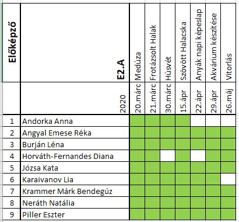
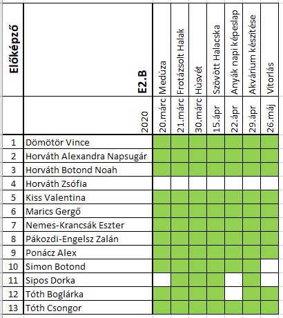
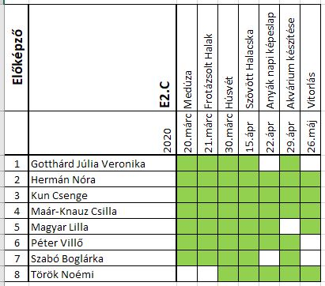
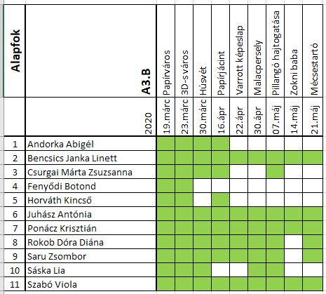
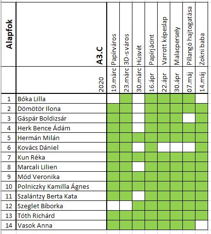
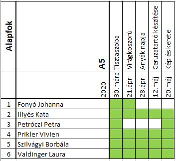

Ezúton szeretném közelebb hozni a munkacsoportokban dolgozókat egymáshoz,
mert szívet melengető látni a munkáitokat és szeretném,
ha ti is látnátok a veletek egy feladaton dolgozók munkáit,
és hogy ők meddig jutottak az elvégzésükben.
Előképzősök
Feladatok
E2.A
Andorka Anna Angyal Emese Réka Burján Léna Horváth-Fernandes Diana Józsa Kata Karaivanov Lia Krammer Márk Bendegúz Neráth Natália Piller Eszter
E2.B
Dömötör Vince Horváth Alexandra Napsugár Horváth Botond Noah Horváth Zsófia Kiss Valentina Marics Gergő Nemes-Krancsák Eszter Pákozdi-Engelsz Zalán Ponácz Alex Simon Botond Sipos Dorka Tóth Boglárka Tóth Csongor
E2.C
Gotthárd Júlia Veronika Hermán Nóra Kun Csenge Maár-Knauz Csilla Magyar Lilla Péter Villő Szabó Boglárka Török Noémi
Alapfokú
Feladatok
A3.A
Ács Laura Benyáts Klaudia Jámbor Tímea Kitti Kovács Fruzsina Mária Nuszer Abigél Sóvári Dénes Tóth Brigitta
A3.B
Andorka Abigél Bencsics Janka Linett Csurgai Márta Zsuzsanna Fenyődi Botond Horváth Kincső Juhász Antónia Ponácz Krisztián Rokob Dóra Diána Saru Zsombor Sáska Lia Szabó Viola
A3.C
Bóka Lilla Dömötör Ilona Gáspár Boldizsár Herk Bence Ádám Hermán Milán Kovács Dániel Kun Réka Marcali Lilien Mód Veronika Polniczky Kamilla Ágnes Szalántzy Berta Kata Szeglet Bíborka Tóth Richárd Vasok Anna
A5
Feladatok
Fonyó Johanna Illyés Kata Petróczi Petra Prikler Vivien Szilvágyi Borbála Valdinger Laura
Elérhetőségek
- turocziklara@freemail.hu
- e-kreta
- telefonszám: +36 70 568 0180